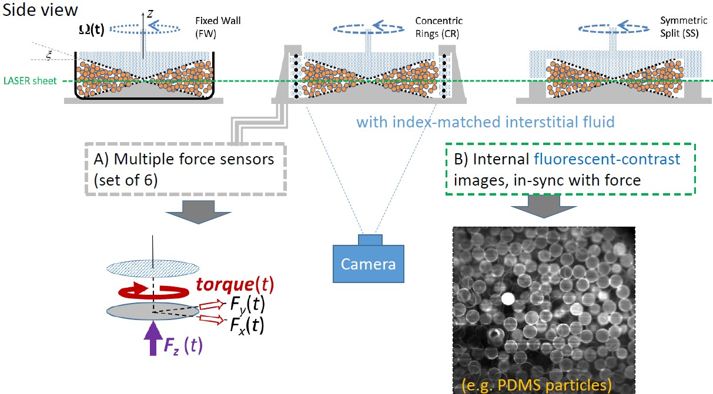
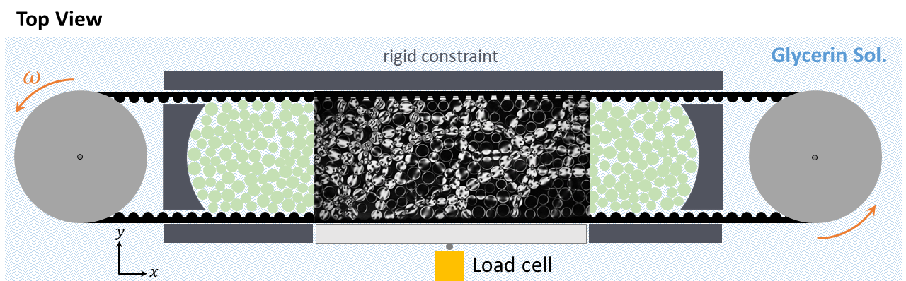
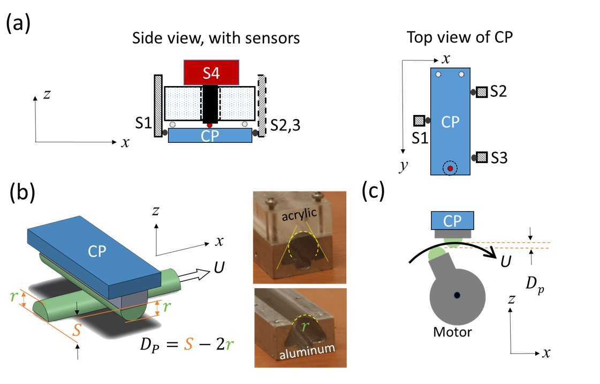
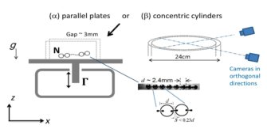
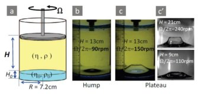

-
Soft particles Sheared in 3D (Proj. SS3 & Proj. CSC)
Recent publications:
- Internal motion of soft granular particles under circular shearing [Phys.Rev.Res. 2025]
- Signature of Transition between Granular Solid and Fluid [Phys.Rev.Lett. 2021] [Online Supplement]
- Soft granular particles sheared at a controlled volume [Soft Matter, 2020] [Online Supplement]
- 周明叡's 2016 MS Thesis (NTU)
顆粒體流動(granular flow)的多樣性自古一直缺乏統整的解釋，近期實驗室團隊的發現，為這個統合提供了可能的起點：以往實驗(SS3)聚焦在緊壓於液體裡膠質 顆粒的剪切流(shear flow)其瞬時轉矩隨施加的轉速呈現的起伏變化(fluctuations)，實驗室團隊也同時藉由實測並納入「摩擦力隨接觸面行進速度變化」這個久為人知但常被理論忽略的因素(Project SBD --see below)，歸納出新的無因次量 (dimensionless number) 。依此，SS3實驗裡為何在「中等」轉速範圍會出現如地震般的間歇性(intermittent)流動及崩解(avalanche)，得以有合理的解釋。上述這種間歇流的出現，更可視為同樣系統處於較高轉速下 類似流沙(quicksand)的「完全液化」，及極低轉速下可比擬於沙漏上半部的「準靜態(quasi-static)流動」，這兩種迥異行為之間的過渡狀態 ......
新建中的實驗設計(CSC) 將超越先前的限制, 試用姑稱之circular shearing 的幾何造型, 輔以高速光頁掃描, 將著重於內部攝影解析"間歇性流"狀態下的"崩解"現象背後隱含的物理原則.....


-
Numerical Experiments--MD simulation of Simple Shear (Proj. SSMD)
Recent publication:
Two types of quaking and shear unjamming: State diagram for soft granular particles in quasistatic shear [Phys.Rev.Res., 2024]
我們利用已開發多年的數值實驗系統LAMMPS試圖理解在「無重力、無液體，僅考慮接觸力」的理想狀態下，大量顆粒體在3d空間承受同材質牆面的簡單剪切(simple shear) 作用的反應。 此數值模擬又稱分子動力(molecular dynamics)模擬，有別於實體實驗，能提供我們代表每個顆粒的移動、轉動、擠壓程度之「完整」資訊。此數值實驗以學界已普遍接受的History-dependent Hertzian Model為本， 但在其「摩擦係數」引入我們在SS3及SBD實測到的speed depedence。SSMD初步的目標是驗證在所設的理想條件下，是否能以此最簡模型(minimal model)重現我們在實驗室觀察到的特徵，以及實體實驗技術上未便取得的細節...
-
Two-dimensional Photo-Elastic discs under shear (Proj. TPE)
我們正在開發一項準二維(quasi-2D)實驗，利用浸置在甘油溶液中的膠質圓盤來模擬顆粒，藉此觀察穩定的二維剪切流(shear flow)。 溶液的潤滑作用能夠大幅消除底面摩擦力的干擾；同時，我們也能即時測量圓盤的位移與轉動，進而完全掌握每個接觸點的滑動與滾動。


膠質圓盤的光彈性質(photoelasticity)能夠精確反映每個圓盤的受力情況，不過由於液體會讓圓盤產生內應力，既有的分析方法難以直接應用。 因此，我們結合了卷積神經網路（Convolutional Neural Network, CNN），透過人工智慧自動識別圓盤間的承力點及各個圓盤所受的「總力」大小，從而精確地推算出個別圓盤之間接觸力的大小與方向。 此準二維實驗使我們得以深究由三維顆粒流中未便獲取的微觀尺度細節......

Past Projects:
-
Soft Ball Dynamics (Proj. SBD)
Recent publication:
Dynamical force measurements for contacting soft surfaces upon steady sliding: Fixed-depth tribology [Phys.Rev.E, 2024]
此實驗目的為對主實驗SS3提供摩擦力隨接觸面行進速度變化的實測基礎，使用與SS3相同的物質(PDMS)進行摩擦實驗，並探討潤滑液體及滑動速度對摩擦力的影響。 初步證實若以Vη (=speed * viscosity) 作為標準，會發現在一定的數值範圍下，摩擦力的訊號會產生近週期性的stick-slip pattern，造成摩擦力平均值的下降，此實驗同時也發現了PDMS在摩擦中會有疑似表面 隨時間及磨擦過程逐漸變化的跡象。這些發現或可為SS3所展現的諸多現象提供解釋的線索。
-
Granular Polymer with Transitions (Proj. GPT)
Publications:
- 黃柏嘉's 2016 MS Thesis (NTU)
- Spontaneous switching of states [Phys.Rev.E 2016] [Videos]
- 孫宇岑's 2015 MS Thesis (NTNU)
- Ratcheting of active chain in a gradient of excitation [Phys.Rev.Lett. 2014] [Online Supplement]
在先前的論文(Phys. Rev. Lett. 112, 058001, 2014)中,我們初探短珠鍊在空間梯度上運動行為產生"分道揚鏢"的奇景。 透過攝影機進一步研究珠鍊的微觀運動，我們可將其分為3種狀態 (states, 見Demo movies) 在某些震動強度下，珠鍊可以自發性的在不同狀態之間作轉變(transitions)； 同時隨著震動強度增加，處在各個狀態的 分佈比例也隨之改變。 同時我們也研究狀態如何影響水平運動……

-
Rotating two-Fluid Interface (Proj. RFI)
Publications:
- Vortex-induced morphology on a two-fluid interface and the transitions [Phys.Rev.E 2015] [Online Supplement]

這是由實驗室的前成員 - 賴靜瑤所開啟的研究(最早可追溯至2009年的國際高中科展)，觀察液體界面隨著上蓋轉速變化 所產生出耐人尋味的形貌。為了解釋此現象我們同時觀察了內部流場的結構，來理解界面產生 「plateau」的緣故。
To 暑期計劃學生：
We are particularly interested in hearing students' thoughts, opinions,or even tentative proposals regarding our ongoing projects. Please don't hesitate to include them in your application materials to help the selection committee have a better understanding about you. Feel free to stop by our lab and talk to us if you are interested.
- You are here:
- Home

- Projects
Contact Us
Phone: +886-2-2789-8914/8917
jctsai@phys.sinica.edu.tw
中央研究院物理所 Room 232
Institute of Physics, Academia Sinica (AS-IoP)Last update: 2024/11/26 10:30
-
-